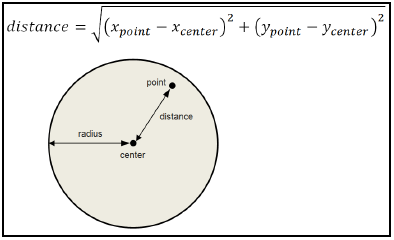

⇐Глава 2. Привет, маленький мир!
ГЛАВА 2
Приложение "Круг"
В этом разделе мы рассмотрим простое круговое приложение. Как следует из названия, он позволяет пользователь для обработки кругов в графическом приложении. Пользователь может добавить новый круг, нажав левая кнопка мыши. Пользователь также может перемещать существующий круг, перетаскивая его. Более того, пользователь может изменить цвет круга, а также сохранить и открыть документ:

Главное окно
Как мы увидим в этой книге, функция MainWindow всегда делает одно и то же: он устанавливает имя приложения и создает главное окно приложения. Имя используется стандартными диалоговыми окнами «Сохранить» и «Открыть», пунктом меню «О программе» и реестром.
Отличие главного окна от других окон приложения в том, что когда пользователь закрывает главное окно, приложение закрывается. Более того, когда пользователь выбирает пункт меню Exit, главное окно закрывается и вызывается его деструктор:
MainWindow.cpp
#include "..\\SmallWindows\\SmallWindows.h"
#include "Circle.h"
#include "CircleDocument.h"
void MainWindow(vector <String> /* argumentList */, WindowShow windowShow) {
Application::ApplicationName() = TEXT("Circle");
Application::MainWindowPtr() = new CircleDocument(windowShow);
}
Класс CircleDocument
Класс CircleDocument расширяет класс Small Windows StandardDocument, который, в свою очередь, расширяет классы Document и Window. Фактически, класс StandardDocument представляет собой фреймворк, то есть базовый класс с набором виртуальных методов с функциональностью что мы можем переопределить и дополнительно указать.
Методы OnMouseDown и OnMouseUp переопределяются из класса Window и являются вызывается, когда пользователь нажимает или отпускает одну из кнопок мыши. OnMouseMove метод вызывается, когда пользователь перемещает мышь. Метод OnDraw также переопределяется из класса Window и вызывается каждый раз, когда окно необходимо перерисовать.
ClearDocument, ReadDocumentFromStream и WriteDocumentToStream методы переопределяются из класса StandardDocument и вызываются, когда пользователь создает новый файл, открывает файл или сохраняет файл:
CircleDocument.h
class CircleDocument : public StandardDocument {
public:
CircleDocument(WindowShow windowShow);
~CircleDocument();
void OnMouseDown(MouseButton mouseButtons, Point mousePoint,
bool shiftPressed, bool controlPressed);
void OnMouseUp(MouseButton mouseButtons, Point mousePoint,
bool shiftPressed, bool controlPressed);
void OnMouseMove(MouseButton mouseButtons, Point mousePoint,
bool shiftPressed, bool controlPressed);
void OnDraw(Graphics& graphics, DrawMode drawMode) const;
bool ReadDocumentFromStream(String name, istream& inStream);
bool WriteDocumentToStream(String name, ostream& outStream) const;
void ClearDocument();
Макросы DEFINE_BOOL_LISTENER и DEFINE_VOID_LISTENER определяют слушателей, которые - это методы без параметров, которые вызываются, когда пользователь выбирает пункт меню. Единственный Разница между макросами заключается в типе возвращаемого значения определенных методов: bool или void.
В приложениях этой книги мы используем общий стандарт, согласно которому слушатели вызывают реакция на действия пользователя имеет префикс On, например OnRed, как показано ниже. фрагмент кода. Методы, которые решают, следует ли включать пункт меню: с суффиксом Enable, и методы, которые решают, должен ли пункт меню быть отмеченные галочкой или радиокнопкой, имеют суффикс Check или Radio.
В следующем приложении мы определяем пункты меню для красного, зеленого и синего цветов. Мы также определите пункт меню для стандартного диалога цвета:
DEFINE_VOID_LISTENER(CircleDocument,OnRed);
DEFINE_VOID_LISTENER(CircleDocument,OnGreen);
DEFINE_VOID_LISTENER(CircleDocument,OnBlue);
DEFINE_VOID_LISTENER(CircleDocument,OnColorDialog);
Когда пользователь выбрал один из цветов, красный, зеленый или синий, соответствующее меню элемент отмечен переключателем. RedRadio, GreenRadio и BlueRadio параметры вызываются до того, как пункты меню становятся видимыми и возвращают логическое значение указывает, должен ли пункт меню быть отмечен переключателем:
DEFINE_BOOL_LISTENER(CircleDocument, RedRadio);
DEFINE_BOOL_LISTENER(CircleDocument, GreenRadio);
DEFINE_BOOL_LISTENER(CircleDocument, BlueRadio);
Радиус круга всегда составляет 500 единиц, что соответствует 5 мм:
static const int CircleRadius = 500;
Поле circleList содержит круги, причем самый верхний круг находится в начале. списка. Поле nextColor содержит цвет следующего круга, который будет добавлен пользователем. Это инициализируется минус 0ne, чтобы указать, что вначале круг не перемещается. В Поля moveIndex и movePoint используются OnMouseDown и OnMouseMove. методы, позволяющие отслеживать перемещение круга пользователем:
private:
vector<Circle> circleList;
Color nextColor;
int moveIndex = -1;
Point movePoint;
};
В вызове конструктора StandardDocument первые два параметра: LogicalWithScroll и USLetterPortrait. Они указывают, что логический размер сотые доли миллиметра и что клиентская область вмещает логический размер американской буквы: 215,9 * 279,4 миллиметра (8,5 * 11 дюймов). Если размер окна изменить так, чтобы клиентская область становится меньше буквы США, в окно добавляются полосы прокрутки.
Третий параметр устанавливает информацию о файле, используемую стандартными диалогами сохранения и открытия; текстовое описание имеет значение Circle Files, а суффикс файла - cle. Nullptr Параметр указывает, что у окна нет родительского окна. В Параметр константы OverlappedWindow указывает, что окно должно перекрывать другие windows, а параметр windowShow - это исходный внешний вид окна, передаваемый в из окружающей системы классом MainWindow:
CircleDocument.cpp
#include "..\\SmallWindows\\SmallWindows.h"
#include "Circle.h"
#include "CircleDocument.h"
CircleDocument::CircleDocument(WindowShow windowShow):StandardDocument(LogicalWithScroll,
USLetterPortrait,TEXT("Circle Files, cle"),
nullptr,OverlappedWindow, windowShow) {
Класс StandardDocument добавляет в окно стандартные меню File, Edit и Help. строка меню. В меню «Файл» находятся пункты «Создать», «Открыть», «Сохранить», «Сохранить как», «Параметры страницы», «Предварительный просмотр» и Выйти из пунктов. Параметры страницы и предварительный просмотр не являются обязательными. Седьмой параметр Конструктор StandardDocument (значение по умолчанию - false) указывает на их наличие. В В меню «Правка» находятся пункты «Вырезать», «Копировать», «Вставить» и «Удалить». По умолчанию они отключены; мы не будет использовать их в этом приложении. В меню «Справка» есть элемент «О программе», а имя приложения, установленное в MainWindow, используется для отображения окна сообщения со стандартным сообщение Circle, версия 1.0.
Мы добавляем в строку меню стандартные меню File и Edit. Затем мы добавляем Цветное меню, которое является меню этого приложения для конкретного приложения. Наконец, добавляем стандартный Справочное меню и установите строку меню документа.
В меню «Цвет» находятся пункты меню, используемые для установки цвета круга. OnRed, OnGreen, и OnBlue методы вызываются, когда пользователь выбирает пункт меню, а RedRadio, Методы GreenRadio и BlueRadio вызываются до того, как пользователь выберет меню Color в чтобы решить, следует ли отмечать элементы с помощью переключателя. OnColorDialog открывает стандартный диалог цвета.
В тексте & Red\tCtrl+R в следующем фрагменте кода амперсанд (&) указывает, что в пункте меню есть мнемоника; то есть буква R будет подчеркнута, и можно выберите пункт меню, нажав R после того, как меню было открыто. Персонаж табулятора (\t) указывает, что вторая часть текста определяет ускоритель; то есть текст Ctrl + R появится в пункте меню с выравниванием по правому краю, и этот элемент можно выбрать, нажав Ctrl + R:
Menu menuBar(this);
Параметр false для StandardFileMenu указывает, что мы не хотим включать пункты меню файла.
menuBar.AddMenu(StandardFileMenu(false));
Метод AddItem в классе Menu также принимает еще два параметра для включения пункт меню и установка флажка. Однако мы не используем их в этом приложении. Поэтому отправляем нулевые указатели:
Menu colorMenu(this, TEXT("&Color"));
colorMenu.AddItem(TEXT("&Red\tCtrl+R"), OnRed, nullptr, nullptr, RedRadio);
colorMenu.AddItem(TEXT("&Green\tCtrl+G"), OnGreen, nullptr, nullptr, GreenRadio);
colorMenu.AddItem(TEXT("&Blue\tCtrl+B"), OnBlue, nullptr, nullptr, BlueRadio);
colorMenu.AddSeparator();
colorMenu.AddItem(TEXT("&Dialog ..."), OnColorDialog);
menuBar.AddMenu(colorMenu);
menuBar.AddMenu(StandardHelpMenu());
SetMenuBar(menuBar);
Наконец, мы считываем текущий цвет (цвет следующего добавляемого круга) из реестра; красный - это цвет по умолчанию, если в реестре нет цвета:
nextColor.ReadColorFromRegistry(TEXT("NextColor"), Red);
}
Деструктор сохраняет текущий цвет в реестре. В этом приложении нам не нужно выполнять обычные задачи деструктора, такие как освобождение памяти или закрытие файлов:
CircleDocument::~CircleDocument() {
nextColor.WriteColorToRegistry(TEXT("NextColor"));
}
Метод ClearDocument вызывается, когда пользователь выбирает пункт меню New. В этом В этом случае мы просто очищаем круговой список. Любое другое действие, такое как перерисовка окна или изменение его заголовка выполняется классом StandardDocument:
void CircleDocument::ClearDocument() {
circleList.clear();
}
Метод WriteDocumentToStream вызывается классом StandardDocument, когда пользователь сохраняет файл (выбирая «Сохранить» или «Сохранить как»). Пишет количество кругов (размер список кругов) в выходной поток и вызывает метод WriteCircle для каждого круга в чтобы записать свои состояния в поток:
bool CircleDocument::WriteDocumentToStream(String name, ostream& outStream) const {
int size = circleList.size();
outStream.write((char*) &size, sizeof size);
for (Circle circle : circleList) {
circle.WriteCircle(outStream);
}
return ((bool) outStream);
}
Метод ReadDocumentFromStream вызывается методом StandardDocument. когда пользователь открывает файл, выбрав пункт меню «Открыть». Он читает количество кругов (размер списка кругов) и для каждого круга создается новый объект класса Circle, вызывает метод ReadCircle для чтения состояния круга и добавляет объект круга в метод circleList:
bool CircleDocument::ReadDocumentFromStream(String name, istream& inStream) {
int size;
inStream.read((char*) &size, sizeof size);
for (int count = 0; count < size; ++count) {
Circle circle;
circle.ReadCircle(inStream);
circleList.push_back(circle);
}
return ((bool) inStream);
}
Метод OnMouseDown вызывается, когда пользователь нажимает одну из кнопок мыши. Первый нам нужно проверить, нажали ли они левую кнопку мыши. Если есть, зацикливаем через список кругов и вызовите метод IsClick для каждого круга, чтобы решить нажали ли они на кружок. Обратите внимание, что самый верхний круг расположен в начало списка; поэтому мы выполняем цикл с начала списка. Если мы обнаружим нажатый круг, разрываем петлю.
Если пользователь щелкнул кружок, мы сохраняем его индекс moveIndex и текущую мышь. положение в movePoint. Оба значения необходимы этому методу OnMouseMove, который будет вызывается, когда пользователь перемещает мышь:
void CircleDocument::OnMouseDown (MouseButton mouseButtons, Point mousePoint,
bool shiftPressed /* = false */, bool controlPressed /* = false */) {
if (mouseButtons == LeftButton) {
moveIndex = -1;
int size = circleList.size();
for (int index = 0; index < size; ++index) {
if (circleList[index].IsClick(mousePoint)) {
moveIndex = index;
movePoint = mousePoint;
break;
}
}
Однако, если пользователь не щелкнул круг, мы добавляем новый круг. Круг определяется его центральное положение (mousePoint), радиус (CircleRadius) и цвет (nextColor).
Недействительная область - это часть клиентской области, которую необходимо перерисовать. Помните, что в Windows, мы обычно не рисуем фигуры напрямую. Вместо этого мы называем Invalidate метод, чтобы сообщить системе, что область необходимо перерисовать, и принудительно выполнить перерисовку путем вызова метода UpdateWindow, который в конечном итоге приводит к вызову OnDraw метод. Аннулированная область всегда представляет собой прямоугольник. Метод Invalidate имеет второй параметр (значение по умолчанию - истина), указывающий, что недействительная область должна быть очищена.
Технически он окрашен в клиентский цвет окна, который в данном случае белый. В этом Таким образом, предыдущее положение круга очищается, и круг рисуется в новом месте.
Метод SetDirty сообщает платформе, что документ был изменен ( документ стал грязным), что приводит к включению пункта меню Сохранить и пользователю будет предупрежден, если он / она попытается закрыть окно, не сохраняя его:
if (moveIndex == -1) {
Circle newCircle(mousePoint, CircleRadius, nextColor);
circleList.push_back(newCircle);
Invalidate(newCircle.Area());
UpdateWindow();
SetDirty(true);
}
}
}
Метод OnMouseMove вызывается каждый раз, когда пользователь перемещает мышь хотя бы одним кнопка мыши нажата. Сначала нам нужно проверить, нажимает ли пользователь левую кнопку мыши. и щелкает кружок (независимо от того, равен ли метод moveIndex -1). Если user is, мы вычисляем расстояние от предыдущего события мыши (OnMouseDown или OnMouseMove), сравнивая предыдущее и текущее положение мыши с помощью mousePoint метод. Мы обновляем положение круга, аннулируем как старую, так и новую область, принудительно перерисовать недействительные области с помощью метода UpdateWindow и установить грязный флаг:
void CircleDocument::OnMouseMove (MouseButton mouseButtons, Point mousePoint,
bool shiftPressed /* = false */, bool controlPressed /* = false */) {
if ((mouseButtons == LeftButton)&&(moveIndex != -1)) {
Size distanceSize = mousePoint - movePoint;
movePoint = mousePoint;
Circle& movedCircle = circleList[moveIndex];
Invalidate(movedCircle.Area());
movedCircle.Center() += distanceSize;
Invalidate(movedCircle.Area());
UpdateWindow();
SetDirty(true);
}
}
Строго говоря, метод OnMouseUp можно было исключить, поскольку метод moveIndex установлен на минус один в методе OnMouseDown, который всегда вызывается перед OnMouseMove метод. Однако он был включен для полноты картины:
void CircleDocument::OnMouseUp (MouseButton mouseButtons, Point mousePoint,
bool shiftPressed /* = false */, bool controlPressed /* = false */) {
moveIndex = -1;
}
Метод OnDraw вызывается каждый раз, когда окно необходимо (частично или полностью) перерисовано. Вызов может быть инициализирован системой как ответ на событие (например, window был изменен размер) или путем более раннего вызова метода UpdateWindow. В Параметр ссылки на графику был создан фреймворком и может рассматриваться как набор инструментов для рисования линий, рисования областей и ввода текста. Однако в этом приложении мы не пишем текст.
Мы перебираем список кругов и для каждого круга вызываем метод Draw. Обратите внимание, что мы делаем не заботится о том, какие круги физически перерисовывать. Просто перерисовываем все кружочки. Однако только круги, расположенные в области, которая была аннулирована предыдущим вызовом Метод Invalidate будет физически перерисован.
У метода Draw есть второй параметр, указывающий режим рисования, который может быть Paint или распечатать. Метод Paint указывает, что метод OnDraw вызывается методом OnPaint. в классе Window и что рисование выполняется в клиентской области окна. Метод Print указывает, что метод OnDraw вызывается методом OnPrint и что картина отправлена в типографию. Однако в этом приложении мы не используем это параметр:
void CircleDocument::OnDraw(Graphics& graphics, DrawMode /* drawMode */) const {
for (Circle circle : circleList) {
circle.Draw(graphics);
}
}
Методы RedRadio, GreenRadio и BlueRadio вызываются до того, как элементы меню будут отображается, и элементы будут отмечены переключателем, если они вернут true. Красный, Константы Green и Blue определены в классе Color:
bool CircleDocument::RedRadio() const {
return (nextColor == Red);
}
bool CircleDocument::GreenRadio() const {
return (nextColor == Green);
}
bool CircleDocument::BlueRadio() const {
return (nextColor == Blue);
}
Методы OnRed, OnGreen и OnBlue вызываются, когда пользователь выбирает соответствующий пункт меню. Все они устанавливают для поля nextColor соответствующее значение:
void CircleDocument::OnRed() {
nextColor = Red;
}
void CircleDocument::OnGreen() {
nextColor = Green;
}
void CircleDocument::OnBlue() {
nextColor = Blue;
}
Метод OnColorDialog вызывается, когда пользователь выбирает пункт меню диалогового окна Color. и отображает стандартный диалог цвета. Если пользователь выбирает новый цвет, следующий цвет методу будет присвоено выбранное значение цвета:
void CircleDocument::OnColorDialog() {
StandardDialog(this, nextColor);
}
Класс Circle
Круг - это класс, содержащий информацию об одном круге. Конструктор по умолчанию используется при чтении круга из файла. Второй конструктор используется при создании нового круг. Метод IsClick возвращает истину, если данная точка находится внутри круга (чтобы проверьте, щелкнул ли пользователь по кругу), метод Area возвращает круг окружающий прямоугольник (для признания недействительным), и вызывается метод Draw для перерисовки круга:
Circle.h
class Circle {
public:
Circle();
Circle(Point center, int radius, Color color);
bool WriteCircle(ostream& outStream) const;
bool ReadCircle(istream& inStream);
bool IsClick(Point point) const;
Rect Area() const;
void Draw(Graphics& graphics) const;
Point Center() const {return center;}
Point& Center() {return center;}
Color GetColor() {return color;}
Как упоминалось в предыдущем разделе, круг определяется его центральным положением (center), радиус (radius) и цвет (color):
private:
Point center;
int radius;
Color color;
};
Конструктору по умолчанию не нужно инициализировать поля, поскольку он вызывается, когда пользователь открывает файл, и значения считываются из файла. Однако второй конструктор инициализирует центральную точку, радиус и цвет круга:
Circle.cpp
#include "..\\SmallWindows\\SmallWindows.h"
#include "Circle.h"
Circle::Circle() {
// Empty.
}
Circle::Circle(Point center, int radius, Color color)
:color(color), center(center), radius(radius) {
// Empty.
}
Метод WriteCircle записывает в поток цвет, центральную точку и радиус. С Радиус является обычным целым числом, мы просто используем стандартную функцию C write, а Color и У Point есть свои собственные методы записи значений в поток. В ReadCircle, мы считываем цвет, центральную точку и радиус из потока аналогичным образом:
bool Circle::WriteCircle(ostream& outStream) const {
color.WriteColorToStream(outStream);
center.WritePointToStream(outStream);
outStream.write((char*) &radius, sizeof radius);
return ((bool) outStream);
}
bool Circle::ReadCircle(istream& inStream) {
color.ReadColorFromStream(inStream);
center.ReadPointFromStream(inStream);
inStream.read((char*) &radius, sizeof radius);
return ((bool) inStream);
}
Метод IsClick использует теорему Пифагора для вычисления расстояния между заданными точка и центральная точка круга и возвращает истину, если точка находится внутри круга (если расстояние меньше или равно радиусу круга):
Circle::IsClick(Point point) const {
int width = point.X() - center.X(),
height = point.Y() - center.Y();
int distance = (int) sqrt((width * width) + (height * height));
return (distance <=r adius);
}
Левый верхний угол получившегося прямоугольника - это центральная точка минус радиус и нижний правый угол - это центральная точка плюс радиус:
Rect Circle::Area() const {
Point topLeft = center - radius,
bottomRight = center + radius;
return Rect(topLeft, bottomRight);
}
Мы используем метод FillEllipse (метода FillCircle нет) Small Windows Класс Graphics для рисования круга. Граница круга всегда черная, а его внутренний цвет задается цветовым полем:
void Circle::Draw(Graphics& graphics) const {
Point topLeft = center - radius, bottomRight = center + radius;
Rect circleRect(topLeft, bottomRight);
graphics.FillEllipse(circleRect, Black, color);
}
Резюме
В этой главе вы рассмотрели два приложения в Small Windows: простой привет-мир приложение и чуть более продвинутое круговое приложение, в котором рамки. Вы также изучили меню, рисование кругов и работу с мышью.
В главе 3 «Создание приложения Тетрис», мы разработаем классическую игру «Тетрис».